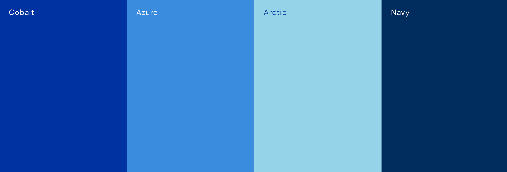
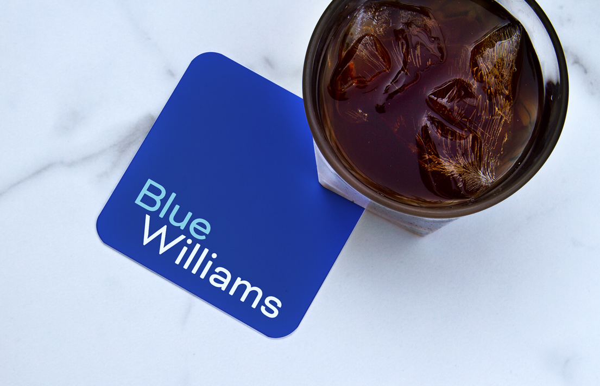

- Client
- Blue Williams
- Agency
- Deep Fried Advertising
- Active
- 2019-present
- Role
-
- Lead Designer
- Work
-
- Branding
- Print Design
- Digital Design
The rebrand was an exciting, dramatic shift from their previous look with a transition to a modern sans-serif typeface that balances sharp angles and gentle curves. This speaks to the firm's serious yet approachable attitude towards the practice of law and how they treat their clients. In addition to the primary logo, I created a suite of secondary lockups.

The new color palette for Blue Williams is inspired by Pantone’s 2020 Color of the Year: Classic Blue – a serendipitous time to rebrand a company with “Blue” in its name. Cobalt is the primary and most prominent color that sets the foundation for the brand. Azure serves as the middle tone and second color in the logo. Arctic is the icy accent; followed by Navy, the grounding tone.

